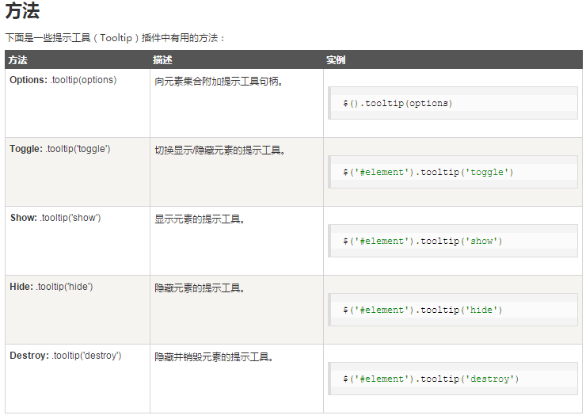
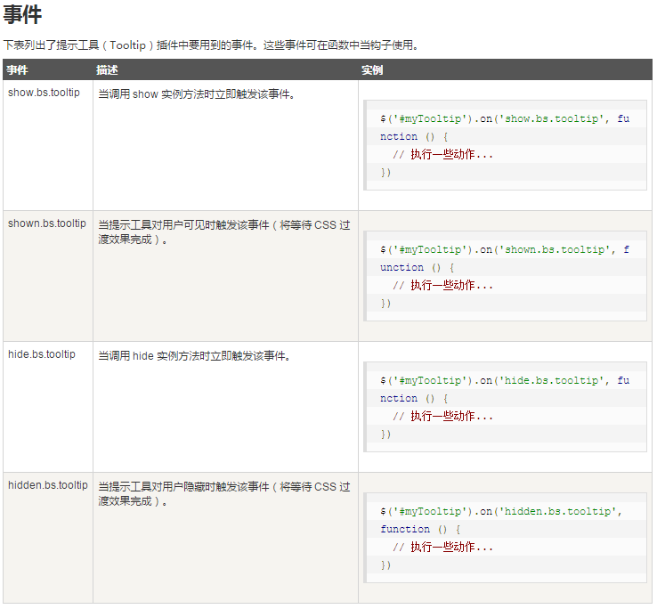

插件：提示工具（Tooltip）插件
当您想要描述一个链接的时候，提示工具（Tooltip）就显得非常有用。提示工具（Tooltip）插件是受 Jason Frame 写的 jQuery.tipsy 启发。提示工具（Tooltip）插件做了很多改进，例如不需要依赖图像，而是改用 CSS 实现动画效果，用 data 属性存储标题信息。
用法
提示工具（Tooltip）插件根据需求生成内容和标记，默认情况下是把提示工具（tooltip）放在它们的触发元素后面。您可以有以下两种方式添加提示工具（tooltip）：
-
通过 data 属性：如需添加一个提示工具（tooltip），只需向一个锚标签添加
data-toggle="tooltip"即可。锚的 title 即为提示工具（tooltip）的文本。默认情况下，插件把提示工具（tooltip）设置在顶部。<a href="#" data-toggle="tooltip" title="Example tooltip">请悬停在我的上面</a>
-
通过 JavaScript：通过 JavaScript 触发提示工具（tooltip）：
$('#identifier').tooltip(options) -
测试后备注：Modal模态框初始化只能进行一次，之后无论怎么改变配置都仅使用首次初始化的设置。
提示工具（Tooltip）插件不像之前所讨论的下拉菜单及其他插件那样，它不是纯 CSS 插件。如需使用该插件，您必须使用 jquery 激活它（读取 javascript）。使用下面的脚本来启用页面中的所有的提示工具（tooltip）：
$(function () { $("[data-toggle='tooltip']").tooltip(); });
案例
提示工具（Tooltip）插件 - 锚
提示工具（Tooltip）插件 - 按钮


